⚡
Instalación eléctrica completa
Cableado y armado en sistemas monofásicos y bifásicos para casa habitación y negocios, con centros de carga, tierra física y mufa.
Servicio dirigido por Carlos Vázquez. Trabajo directo en Tuxtla Gutiérrez. Fallas eléctricas, cortos, bases de medidor dañadas, instalaciones de luz, ventiladores y climas.
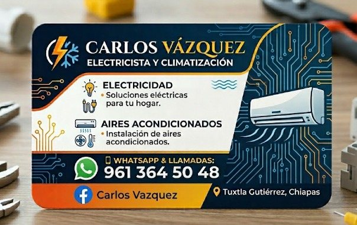
Soluciones prácticas para el calor, el voltaje y las necesidades eléctricas en Tuxtla Gutiérrez.
Cableado y armado en sistemas monofásicos y bifásicos para casa habitación y negocios, con centros de carga, tierra física y mufa.
Revisión de fallas por cortos circuitos y cambio de bases de medidor sulfatadas o quemadas que causan falsos contactos o apagones.
Actualización de accesorios, canalizaciones limpias, luminarias interiores y exteriores, y montaje de ventiladores de techo.
Montaje de aires acondicionados, circuito eléctrico dedicado y desinstalación recuperando el gas refrigerante.
Limpieza profunda de serpentines, turbinas y componentes con equipo Karcher para mejorar el enfriamiento y evitar sobrecargas.
Preparación de líneas y protecciones para equipos de mayor consumo en viviendas y locales comerciales.
Fotografías reales de instalaciones y revisiones. Haz clic en cualquiera para ampliar.
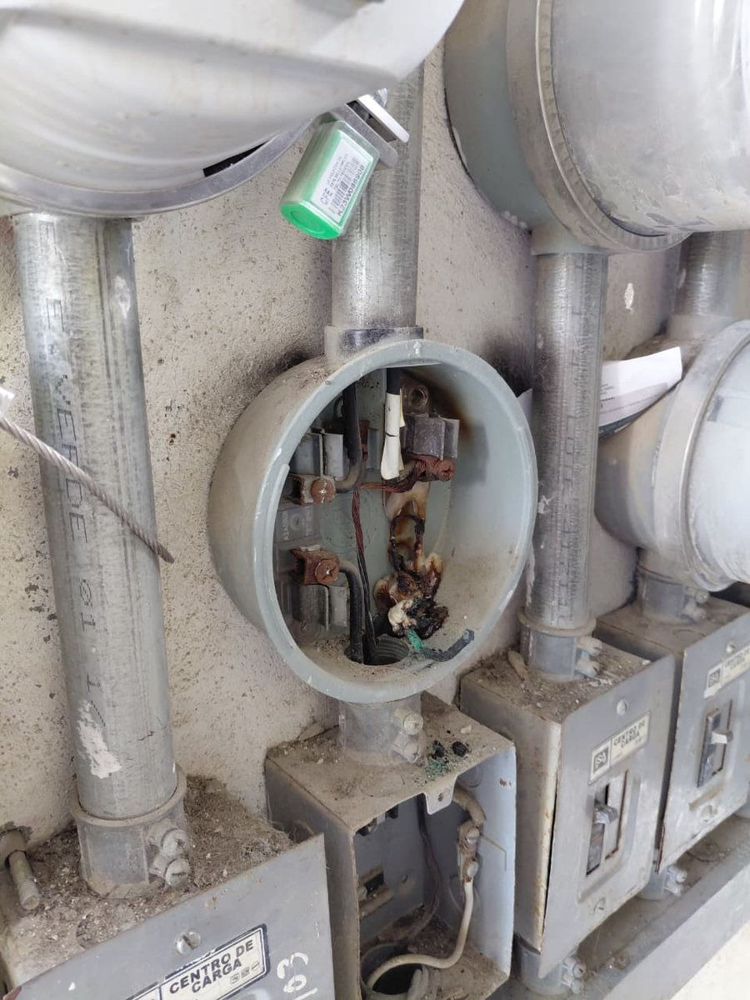
Electricidad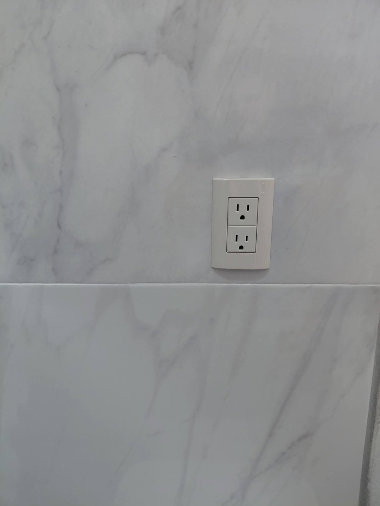
Contactos y luz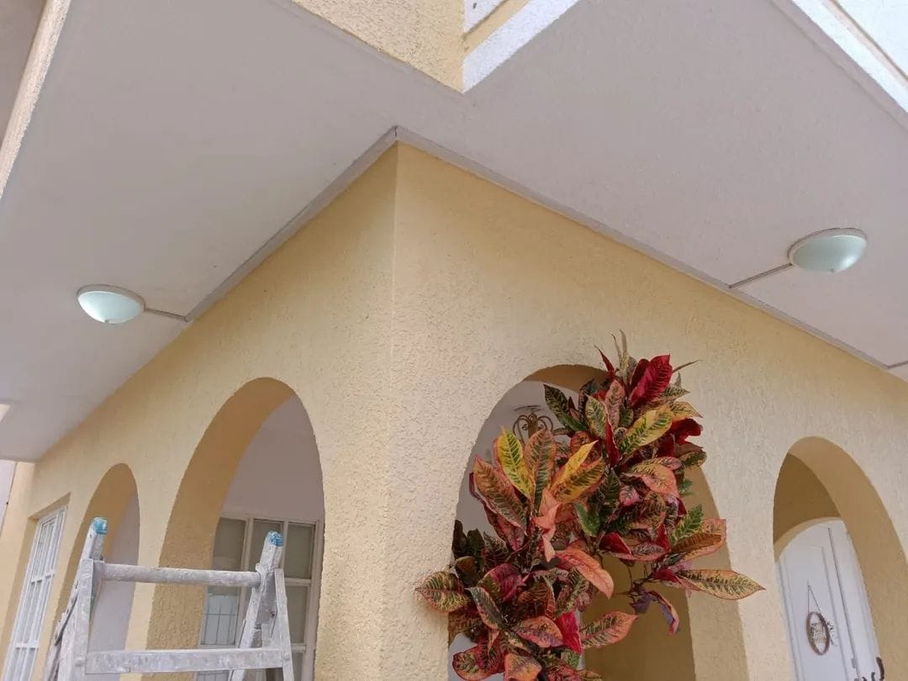
Contactos y luz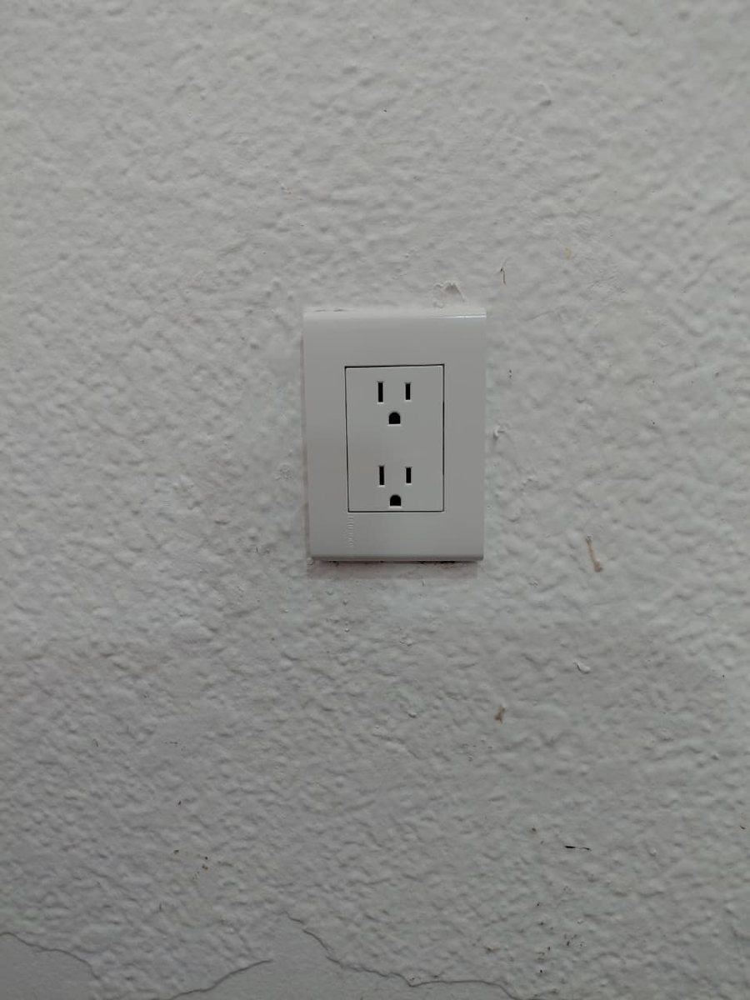
Contactos y luz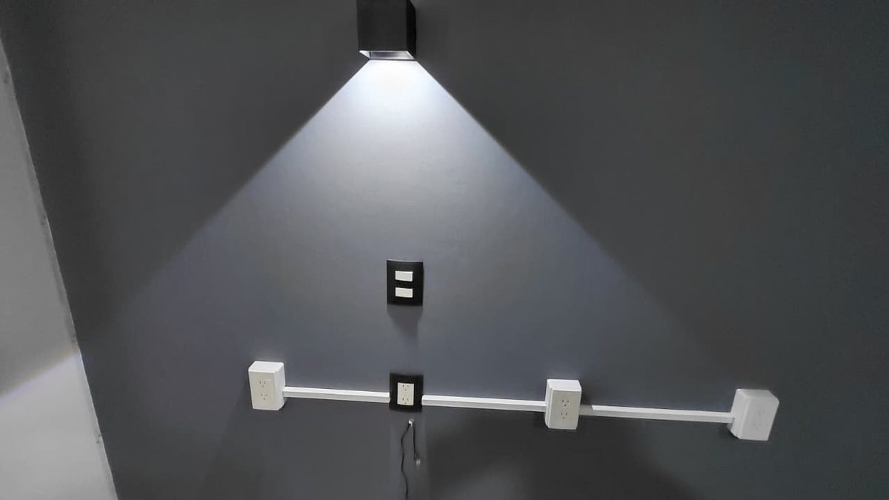
Contactos y luz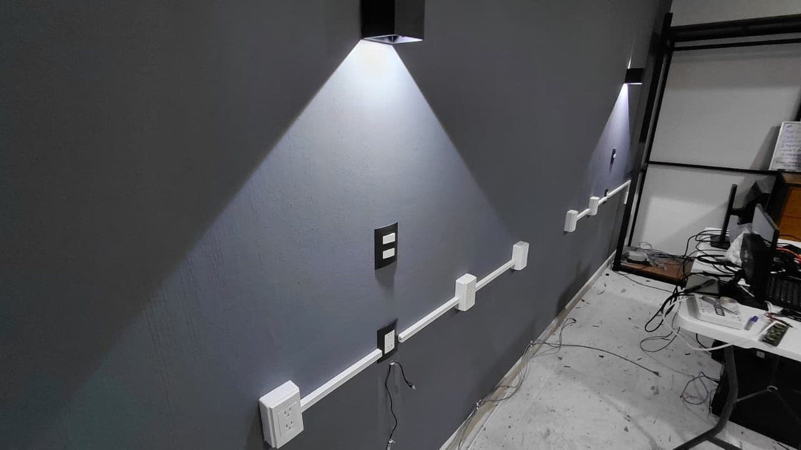
Contactos y luz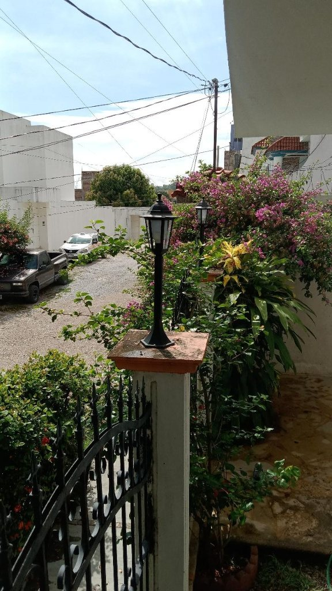
Contactos y luz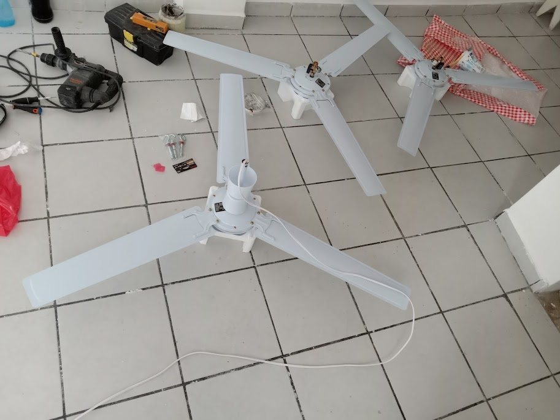
Climas y ventiladores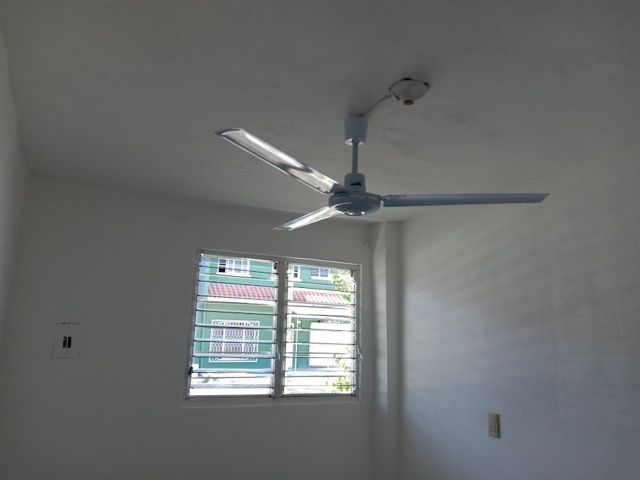
Climas y ventiladores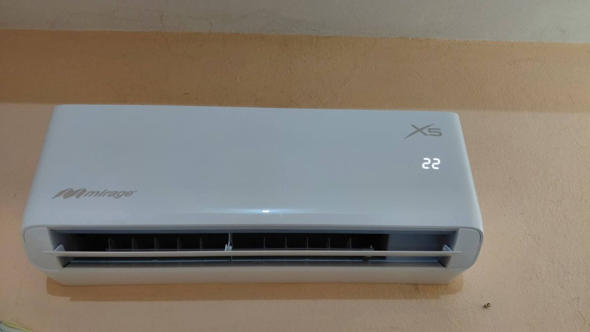
Climas y ventiladores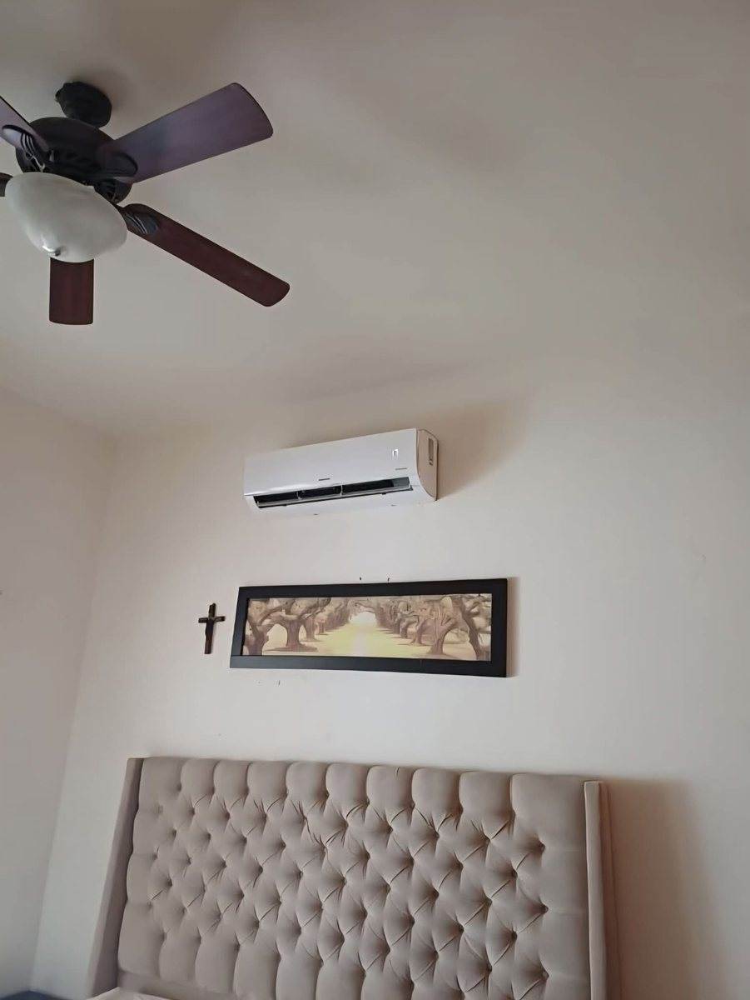
Climas y ventiladores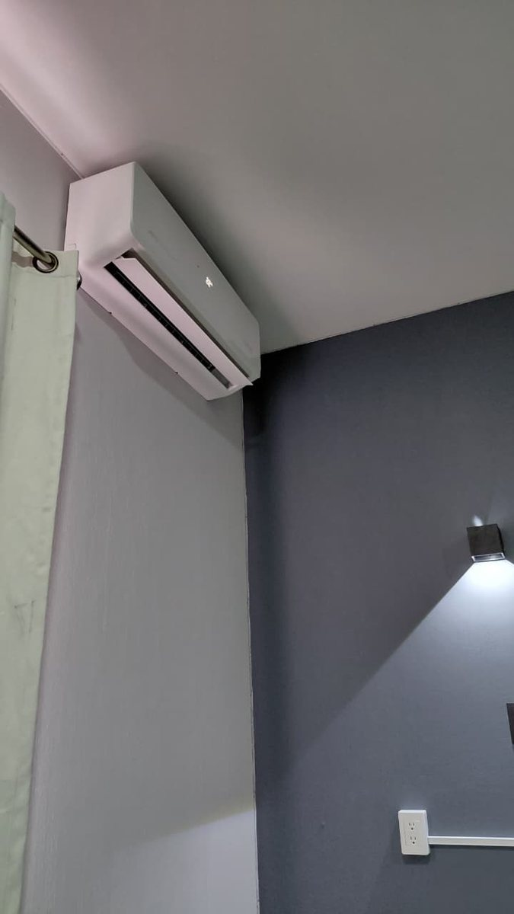
Climas y ventiladoresHaz clic en cada pregunta para ver los detalles del servicio.
Con el calor y el uso continuo, las terminales de la base del medidor pueden sulfatarse, aflojarse o quemarse, provocando falsos contactos o apagones. Realizamos la revisión y el cambio de base de medidor correspondiente.
Sí. Instalamos y renovamos cableado monofásico y bifásico, centros de carga, tierra física, mufa, contactos, apagadores, luminarias y ventiladores de techo.
Hacemos instalación y montaje, desinstalación recuperando el gas refrigerante y mantenimiento con hidrolavadora Karcher.
Sí. Escríbenos al 961 364 50 48 indicando tu colonia o zona en Tuxtla Gutiérrez y qué falla o instalación necesitas.